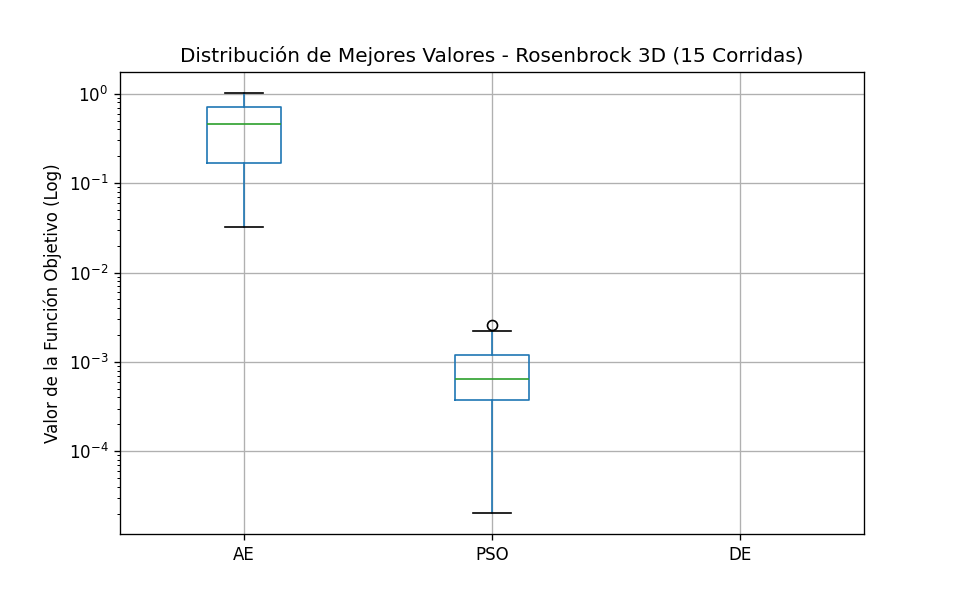
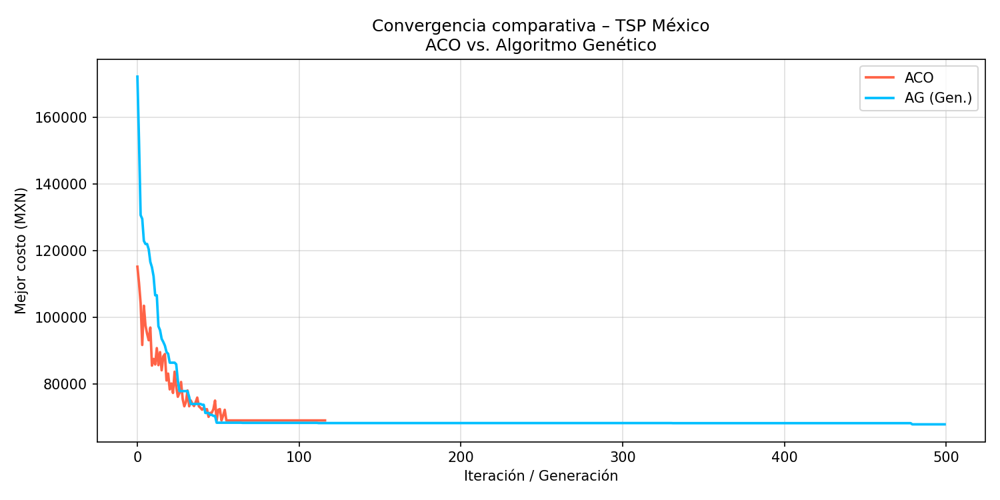

Autores: Cyriac SALIGNAT y Juan José Zapata Moreno
Fecha: Marzo 2026 | Asignatura: Analítica Descriptiva
La optimización es el motor invisible que impulsa la toma de decisiones en el mundo moderno moderno. Desde el diseño de redes neuronales hasta la planificación de rutas logísticas, encontrar el "mejor" resultado bajo un conjunto de restricciones es un arte y una ciencia.
En este reporte (presentado en formato de blog), te invitamos a acompañarnos en un viaje iterativo. Exploraremos dos de los dominios más fascinantes de esta disciplina: la optimización numérica continua, donde el desafío es navegar valles matemáticos traicioneros para encontrar el punto más bajo; y la optimización combinatoria**, donde el reto consiste en descifrar el orden perfecto oculto entre millones de permutaciones (aplicado al Problema del Vendedor Viajero en México).
Para poner a prueba nuestras estrategias, dividimos el proyecto en dos partes fundamentales:
Función de Schwefel: Un terreno sinuoso, repleto de múltiples cerros y mínimos locales profundos. Ideal para causar que algoritmos simples queden "atascados".
Optimización Combinatoria (TSP Mexicano): Un viajero de negocios debe partir de su ciudad natal, recorrer las otras 31 capitales de México y volver a casa obteniendo el costo económico mínimo. ¿Cómo trazamos la ruta perfecta en un país tan extenso sin evaluar millones de años de combinaciones?
Nuestra estrategia computacional sigue un enfoque progresivo:
SymPy para obtener la dirección más pronunciada.Python empleando NumPy para operaciones vectorizadas rápidas, y Matplotlib/ImageIO para la visualización dinámica de la convergencia de las soluciones.Sometimos el GD, AE, PSO y DE a pruebas rigurosas. La Tabla 1 resume el rendimiento obtenido en los escenarios bidimensionales clásicos.
Tabla 1: Métricas de rendimiento de algoritmos en funciones de prueba 2D.
| Función | Método | Mejor Valor ($f_{min}$) | Evaluaciones |
|---|---|---|---|
| Rosenbrock | Gradiente | $< 10^{-6}$ | ~15,000 |
| PSO | 0.00 | 15,000 | |
| DE | 0.00 | ~6,500 | |
| Schwefel | Gradiente | 258.12 (Atrapado) | ~10,000 |
| PSO | 0.00 | 15,000 | |
| DE | 0.00 | ~8,000 |
Como se ilustra en la Tabla 1, el Descenso por Gradiente es extremadamente rápido y preciso cuando las condiciones son convexas o lisas (Rosenbrock). Sin embargo, al enfrentar Schwefel, queda completamente engañado por el primer mínimo local.
El comportamiento de estos agentes puede observarse vívidamente cuando proyectamos los datos en 3D. A continuación, el carrusel de imágenes muestra el abismo de comportamiento entre utilizar derivadas y utilizar inteligencia de enjambre:
La optimización estocástica puede variar según la semilla aleatoria inicial. Para validarlo, realizamos 30 corridas independientes.

Como se describe en la Figura 3, observamos que la Evolución Diferencial (DE) y el Enjambre de Partículas (PSO) mantienen en todas las corridas una dispersión casi nula respecto al óptimo global, demostrando alta robustez estadística frente a las variaciones del espacio de convergencia.
Luego de dominar el relieve matemático continuo, pasamos a las rutas logísticas y a problemas discretos, intentando crear la ruta menos costosa para recorrer las capitales de México.
Nuestra función objetivo no minimiza la distancia, minimiza los pesos mexicanos (MXN). Tomando decisiones realistas apoyadas por literatura:
Este modelo de costos agrega un alto realismo al problema TSP.
Modelamos la solución desde dos trincheras: el Rastro de Feromonas (ACO) y la Supervivencia del más apto (Generación).

Tal y como se observa en la Figura 4, el Algoritmo Genético encuentra un régimen de alto descenso inicial y estabiliza a un costo inferior de forma constante en contraste con las colonias de hormigas que rápidamente estancan sin alcanzar un valle profundo.
A continuación, exponemos la animación iteración por iteración de cómo los algoritmos van encontrando el arreglo perfecto en el mapa nacional:
Como evidencian las Figuras 5 y 6, las mejoras de la ruta iteración con iteración demuestran el intenso proceso de aprendizaje biológico. La ruta encontrada por el algoritmo genético es técnicamente válida y asombrosamente de bajo costo, bajando consistentemente y "desenredando" visualmente la red hasta quedar un círculo casi perfecto a lo largo de las fronteras de nuestro país.
Si entrelazamos estos descubrimientos, nos percatamos que la naturaleza posee herramientas matemáticas muy valiosas: 1. Al contrastar iterativamente los resultados en escenarios espaciales, como lo revelado en las Figuras 1 y 2, notamos que un Gradiente Descendiente requiere condiciones inmaculadas para funcionar, sufriendo "miopía matemática". Las heurísticas, por otro lado, sacrifican elegancia simbólica por pragmatismo computacional. 2. La robustez demostrada en el Boxplot de la Figura 3 nos da la tranquilidad de que tácticas como la Evolución Diferencial no son golpes de suerte. 3. Finalmente, como lo demuestran categóricamente las animaciones en el mapa de las Figuras 5 y 6, los algoritmos biológicos transforman el caos estructural en rutas altamente eficientes, permitiendo a empresas del mundo real ahorrar enormes montos operativos.
A través de rigurosos ejercicios que comprendieron simulaciones de funciones numéricas complejas y la optimización de gastos de viáticos a nivel nacional (TSP), hemos demostrado empíricamente el valor incomparable de la Optimización Computacional Heurística. Los métodos estocásticos, a pesar de sus pesados requerimientos de evaluaciones poblacionales, compensan con creces garantizando su escape de trampas locales y encontrando rumbos creativos (y validables) ante problemas masivos.
El conjunto de los trabajos presentados en este informe ha sido realizado íntegramente por Cyriac SALIGNAT y Juan José Zapata Moreno. La distribución es la siguiente:
Uso de IA: Se recurrió de forma productiva a la asistencia de LLMs para el refino estético, depuración de anomalías sintácticas y redacción de estilo-blog para una divulgación más atractiva.
🔗 Enlace a GitHub: Repositorio Oficial Heurísticas